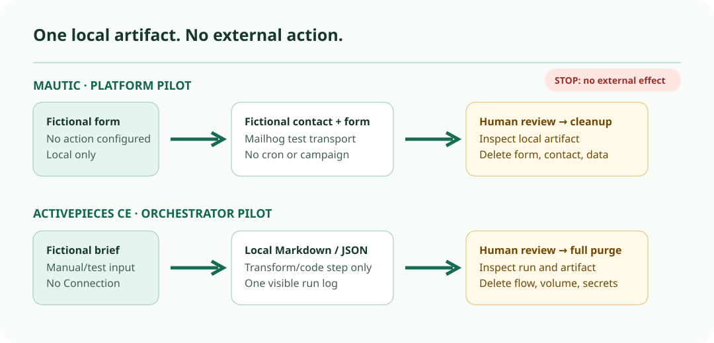

Operations guide · research date 24 Sep 2026
Controlled pilots for Mautic and Activepieces CE.
Evaluate either product only in a disposable local environment, with fictional data and a named human reviewer. This is a plan based on documentation, not a hands-on test or production recommendation.
The two pilots do different work

| Topic | Mautic core | Activepieces CE |
|---|---|---|
| Reviewable artifact | One fictional local form submission and contact, using a local Mailhog test transport. | One local Markdown or JSON content-calendar draft in the run log. |
| Keep external effects off | No form action, campaign, queue/broadcast cron, webhook, integration, tracking script, or real mail transport. | No Connection, public URL/tunnel, webhook/app trigger, LLM/agent, HTTP, email, social, CRM, storage, or paid-media action. |
| Persistent recovery concern | Files and database need backup/recreate testing. A canonical minimal container/volume map was not documented in the checked material. | PostgreSQL stores flows, runs and connections; the database volume and AP_ENCRYPTION_KEY matter for recovery. |
| Queue or scheduler | Cron processes queued email, webhooks, broadcasts, imports, exports and integrations. Leave it off. | Redis is the documented job queue and the worker runs flows. Use one local/manual run only. |
| Access control evidence | Granular roles, including activation/export permissions, are documented; this is not a two-person approval workflow. | The public RBAC page labels roles/custom roles as paid. Treat granular RBAC as not documented for this CE pilot. |
Mautic: inspect a fictional contact, then delete it
Documented facts. Mautic’s 7.x license file releases Mautic under GPL v3. Its releases page showed Mautic Community 7.2.0 on the research date. Installation documentation requires a database, administrator setup and email transport configuration; its DDEV testing/development route includes Mailhog, PHPMyAdmin and Redis Commander. Installation documentation
Boundary. Mautic documents forms, contacts, campaigns, email, integrations and tracking. It is a marketing-automation platform, not proof of consent, lawful basis, deliverability, sender reputation, or human approval. Forms can send email, post elsewhere, or push contacts to integrations, so leaving actions blank is a deliberate pilot control. Forms documentation
- Start a local, disposable DDEV environment. Record the selected version, local hostname, operator and reviewer. Use a unique local administrator and Mailhog, not a real SMTP/API provider.
- Create a non-public form titled
Fictional launch brief — DO NOT PUBLISHusing invented values such asfictional-contact-at-example-dot-invalid. Configure no form action. - Submit it locally. Inspect the fictional contact and form artifact. Do not create or publish a campaign, segment email or tracking route.
- Stop for the reviewer. Then remove the contact, form, test database/environment and local credentials. Do not preserve customer-like records.
Do not start cron. Mautic documents cron processing for queued mail, broadcasts, webhooks and integrations. A running UI is not an authorization to process those jobs. Cron documentation
Controls documented
Granular roles; Do Not Contact and preference controls; files-plus-database backup/recreate guidance; cleanup with a dry-run option; private GitHub vulnerability reporting.
Still unverified
A canonical minimal container/volume map, an application-wide encryption-key recovery path, a full queue alert/retry runbook, and an all-data retention policy were not documented in the checked material.
Activepieces CE: inspect one local run artifact, then purge it
Documented facts. The root license makes code outside packages/ee/ and packages/server/api/src/app/ee available under MIT Expat; those named EE paths use a separate commercial license. The releases page showed 0.91.2 as Latest, published 23 Sep 2026. The Docker Compose guide identifies app, worker, postgres and redis; PostgreSQL contains flows, runs and connections, and Redis is the job queue. Docker Compose guide
The guide creates .env secrets, including AP_ENCRYPTION_KEY; it says a backup without that key cannot decrypt stored connections. Data live in a postgres_data volume. Webhook/app triggers need a public URL, but a manual-only flow does not.
- Inspect and pin compose/image version 0.91.2. Start only locally with generated disposable
.envsecrets. Create no Connection, public URL/tunnel, webhook or app trigger. - Build
Fictional brief → draft artifact — DO NOT PUBLISHwith manual/test input plus one local transform/code step that emits a Markdown or JSON content calendar. - Run once and let the reviewer inspect the run log/artifact. If the installed CE UI does not offer the intended manual/test trigger, stop rather than substituting an external trigger.
- Delete flow/run data if the UI supports it, then use the documented full purge. Confirm the project, data volume and local secrets are absent.
No external node. Do not add an LLM/agent, HTTP, email, social, CRM, storage or paid-media action. Activepieces is an orchestration layer, not a CRM, consent ledger, mail provider or autonomous marketing operator.
Controls documented
Per-step run logs with inputs (secrets hidden), outputs, status, duration and errors; checkpoints/retry behavior; private security disclosure. These are capabilities, not proof of alerting or approval.
Still unverified
Exact CE availability of the manual/test trigger, CE-specific approval/RBAC control, default run-data retention/deletion procedure, and alert/escalation coverage were not documented in the checked material.
What to record after a pilot
- Pilot ID/date; product, edition, exact release/image and source URL.
- Operator/reviewer; local network exposure; only fictional input; reviewed artifact.
- Proof that no external action, form action, queue job, public route or live credential was enabled.
- Services, persistent stores and secrets created; cleanup/deletion confirmation; observed errors.
- A go/no-go decision only for another controlled pilot, plus open questions and the person who would own any future production design.
Limits of this guide
No installation, integration, form submission, delivery or security test occurred. These timeboxes are proposals, not measured setup times. No production recommendation follows from this research.
Before a later phase, test selected-version compatibility, backup/restore, exact piece/plugin and OAuth scope, retention, alerting, consent/legal basis, deliverability, threat model and operating ownership. Mautic and Activepieces each provide a private GitHub security-reporting route; that is a reporting process, not a security guarantee. Mautic security · Activepieces security